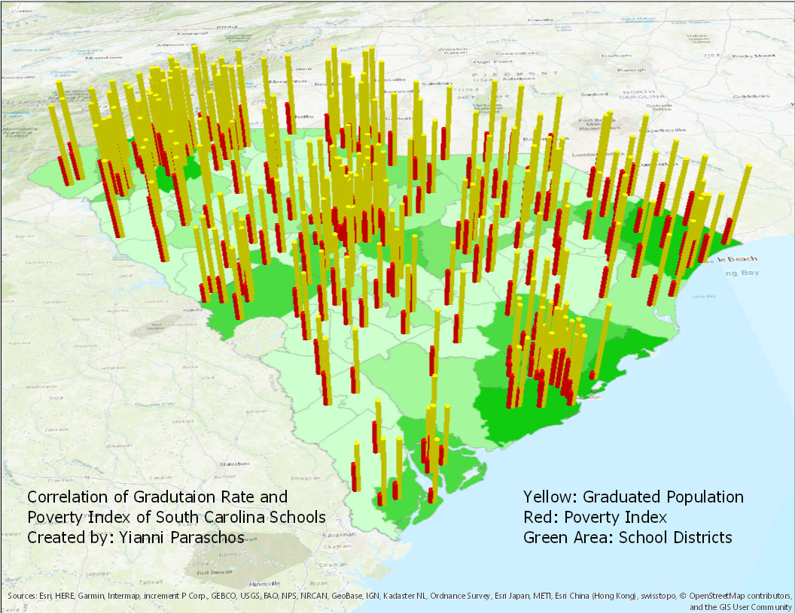

Cemetery Map

Using the Bad Elves (GPS Devices) provided by Mr. Vaught, the class took a field trip to the Ocean Woods Cemetery to geolocate each gravesite. Using this collected data, we will develop a GIS web app that will be available to the public to use to find information on people buried in the cemetery, such as location and general information. I am also currently planning to pursue a similar project on my own at the Southern Palms Memorial Gardens, which is the privately owned cemetery where my sister and my great-grandmother are buried in. I hope to help the public by providing this map to the cemetery. The map will allow the users to have a full view of the cemetery, search for individuals and their locations, and pull up general infomration on each person. I am also planning on creating shape files of each of the sections of the cemetery so that it becomes even easier to locate people; When visitors are lost, they can use the map to guide themselves and inform themselves on all the individuals buried there.
Correlation Project
After learning more about ArcGIS and different ways to display data, we were tasked with finding a correlation between two types of data that was recently released to the public through the SC report cards website. SC Report Cards is a website that allows a user to view the rating of schools and districts in South Carolina and even lets the user compare multiple districts and schools with each other. My project correlated high school poverty rates and graduation rates. Using the spreadsheets that were provided on the website, I combined the data and also added in the addresses from all the schools that I had data for into a single spreadsheet, adding up to 240 schools with data. The map features all the datapoints, fully geocoded, displaying poverty rate beside graduation rate.